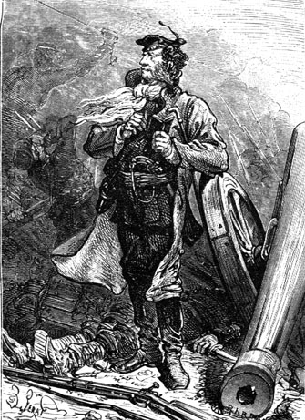
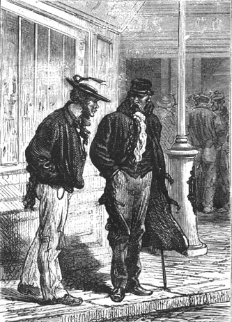
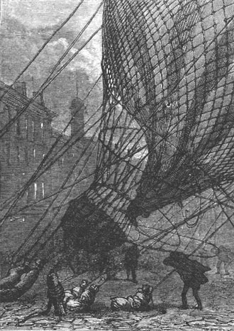

Those whom the storm had thrown on this coast were neither professional aeronauts nor amateurs of aerial expeditions. They were prisoners of war whose audacity had induced them to flee under these extraordinary circumstances. A hundred times they should have perished! A hundred times their torn balloon should have fallen into the abyss! But Heaven reserved a strange destiny for them and on the twenty fourth of March, after having fled Richmond, which was besieged by the troops of General Ulysses Grant, they found themselves seven thousand miles from the capitol of Virginia, the principal stronghold of the rebels during the dreadful Civil War. Their aerial journey had lasted five days.
These are the curious circumstances which resulted in the prisoners’ escape—an escape which ended in the catastrophe just related.
In this same year, in the month of February 1865, during one of those bold actions in which General Grant tried unsuccessfully to capture Richmond, some of his officers fell into enemy hands and were interned in the city. One of the most distinguished of those that were captured was a staff officer by the name of Cyrus Smith.
Cyrus Smith, a native of Massachusetts, was an engineer and a scientist of the first rank. During the war the Union government had entrusted him with the management of the railroads whose strategic role was considerable. A true northerner, he was lean, bony, lanky, and about forty five years of age. His hair was already graying, and as to a beard, he had only a thick moustache. He had one of those handsome “numismatic” heads that looked like they were made to be stamped on medals, with fiery eyes, a serious mouth and the physiognomy of a scientist of the military school. He was one of those engineers who want to begin by handling the hammer and the pick, like those generals who wish to begin as simple soldiers. In addition to an ingenuity of the mind, he also possessed supreme manual ability. His muscles were remarkably well developed. Truly a man of action as well as a man of thought, he worked without effort, having a vitality that defied all hard luck. Very informed, very practical, able to disentangle himself from any difficulty, he had a superb temperament because he always remained master of himself whatever the circumstances. He had in a very large degree the three conditions whose combination determines human energy: activity of mind and body, impetuosity of the desires, and power of the will. And his motto could have been that of Guillaume of Orange of the seventeenth century: “I have no need of hope in order to undertake, nor of success in order to persevere.”
At the same time Cyrus Smith was courage personified. He had been in all the battles of the Civil War. After having begun under Ulysses Grant with the volunteers of Illinois he fought at Paducah, at Belmont, at Pittsburg Landing, at the siege of Corinth, at Port Gibson, at Black River, at Chattanooga, at Wilderness, and on the Potomac, everywhere and valiantly, a soldier worthy of the general who said “I never count my dead!” And a hundred times Cyrus Smith should have been in the number of those not counted by the terrible Grant, but in these combats, where he hardly spared himself, chance favored him as always, up to the moment when he was wounded and captured on the Richmond battlefield.
At the same time as Cyrus Smith and on the same day another important personage fell into the power of the Southerners. It was none other than the honorable Gideon Spilett, “reporter” for the New York Herald, who had been charged to follow the vicissitudes of the war in the midst of the northern armies.

Gideon Spilett
Gideon Spilett was of the race of those astonishing English or American reporters, such as Stanley and others, who recoil at nothing in order to obtain exact information and to transmit it to their journal with the briefest delay. The journals of the Union, such as the New York Herald, are very influential and their reporters are representatives that can be counted on. Gideon Spilett marked the first rank of these representatives.
A man of great merit, energetic, prompt and ready for anything, full of ideas, having traveled the entire world, soldier and artist, hot-headed in advice, resolute in action, counting neither pain nor fatigue nor dangers when gathering news for himself first and then for his journal, a true hero of curiosity, information, the unpublishable, the unknown, the impossible, he was one of those intrepid observers who write under fire, chronically in the line of fire, and for whom all perils are good fortune.
He too had been in all the battles, on the front lines, revolver in one hand, notebook in the other, and grapeshot did not make his hand tremble. He did not burden the telegraph wires incessantly, like those who speak when they have nothing to say, but each of his notes, short, candid and clear, brought light to bear on an important point. Moreover, “humor” did not fail him. It was he who, after the affair of Black River, wishing at any price to keep his place at the wicket of the telegraph office in order to announce to his journal the result of the battle, telegraphed for two hours the first chapters of the bible. It cost the New York Herald two thousand dollars but the New York Herald was the first to be informed.
Gideon Spilett had a tall stature. He was forty years old at most. Light side whiskers, somewhat red, surrounded his face. His eye was calm, quick and rapid in its movements. It was the eye of a man who was accustomed to quickly perceive all the details of a scene. Of solid frame, he was tempered in all climates like a bar of steel in ice water.
For ten years Gideon Spilett had been an accredited reporter of the New York Herald which he enriched with his articles and his drawings because he was as skilled with the pencil as with the pen. When he was captured he was in the act of describing and sketching the battle. The last words written in his notebook were these: “A Southerner is taking aim at me and...” And the shot missed its mark and following his usual luck, Gideon Spilett came out of the affair without a scratch.
Cyrus Smith and Gideon Spilett, who did not know each other except by reputation, were both taken to Richmond. The engineer rapidly recovered from his wound and it was during his convalescence that he made the acquaintance of the reporter. These two men got along and learned to appreciate each other. Soon their common life had only one goal, to escape and rejoin Grant’s army, and to fight again in its ranks for federal unity.
The two Americans decided to profit from any occasion; but although they were left at liberty in the city, Richmond was so severely guarded that an escape could be regarded as impossible.
At this time Cyrus Smith was joined by a servant who was devoted to him in life and in death. This fearless person was a Negro born of slave parents into the engineer’s estate but Cyrus Smith, who was an abolitionist from conviction and from the heart, had long since emancipated him. The slave, on becoming free, did not wish to leave his master. He loved him to the death. He was thirty years old, vigorous, agile, skillful, intelligent, gentle and calm, naive at times, always smiling, helpful and kind. He was called Nebuchadnezzar which was abbreviated to the familiar Neb.
When Neb learned that his master had been made prisoner he left Massachusetts without hesitating, arrived before Richmond, and with shrewdness and ruses, after having risked his life twenty times, he succeeded in penetrating into the besieged city. Cyrus Smith’s pleasure in seeing his servant again and Neb’s joy on finding his master cannot be expressed.
But if Neb was able to get into Richmond it was, on the other hand, difficult to get out because the Federal prisoners were under close surveillance. It would take an extraordinary occasion to enable them to escape with some chance of success, and this occasion not only did not present itself, but it did not seem that it ever would.
Meanwhile Grant continued his energetic operations. The victory at Petersburg had been very dearly fought. His forces, united with those of Butler, could still not obtain a decisive outcome in front of Richmond so that the release of the prisoners was not at hand. The reporter, who found his captivity tedious, could not find a single detail worth noting and could no longer endure it. He had but one idea: to leave Richmond at any price. Several times he had even attempted it but was stopped by insurmountable obstacles.
However the siege continued and if the prisoners were in a hurry to escape to rejoin Grant’s army, some of the besieged were no less in a hurry to flee in order to rejoin the rebel army, among them a certain Jonathan Forster, a rabid Southerner. In fact, if the Federal prisoners could not leave the city neither could the confederates because the Northern army invested it. The governor of Richmond had not been able to communicate with General Lee for some time. It was of upmost importance to make the city’s situation known in order to hasten the march of the relief army. This Jonathan Forster had the idea of floating a balloon in order to cross the besieged lines and thus reach the rebel camp.
The governor authorized the attempt. A balloon was fabricated and placed at the disposal of Jonathan Forster and five of his companions who would follow him into the skies. It was furnished with munitions in case they had to defend themselves on landing, and with provisions in case their aerial voyage was prolonged.
The departure of the balloon was fixed for 18th of March. It would take place during the night and, with a moderate northwest wind the aeronauts could count on arriving at General Lee’s quarters in a few hours.
But this northwest wind was not a simple breeze. From the 18th onwards one could see that it was turning into a storm. Before long the tempest was such that the departure of Forster had to be postponed because it was impossible to risk the balloon and those that it would carry into the unchained elements.
The balloon, inflated in the main square of Richmond, remained there ready to leave at the first break in the wind. They were very impatient when they saw no break in the weather.
The 18th and the 19th passed without any change in the storm. It even proved very difficult to preserve the balloon which gusts of wind threw to the ground.
The night of the 19th to the 20th passed but in the morning the fury of the storm increased. Departure was impossible.
On that day the engineer Cyrus Smith was accosted in one of the streets of Richmond by a man he did not know. He was a sailor called Pencroff, between thirty five and forty years of age, with a vigorous frame, very sunburnt, sharp and blinking eyes, but with a good shape. This Pencroff was a Northerner who had traversed all the seas of the globe and who had experienced all the adventures that could befall a being with two feet and no feathers. Needless to say he had an enterprising nature, ready to venture anything and astonished at nothing. Pencroff came to Richmond at the beginning of the year on business with a fifteen year old boy, Herbert Brown of New Jersey, the son of his captain, an orphan whom he loved like his own child. Not being able to leave the city before the first operations of the siege, he found himself confined there to his great displeasure and he too had but one idea, to escape by all possible means. He knew of Cyrus Smith’s reputation. He knew of the impatience that this determined man endured under restraint. On this day he therefore did not hesitate to approach him saying without thinking:
“Mister Smith, have you had enough of Richmond?”
The engineer stared at the man who spoke to him in this way, who added in a low voice:
“Mister Smith, would you like to escape?”

“Mister Smith, would you like to escape?”
“When?...” the engineer replied briskly. This response escaped him before he could examine the person speaking to him.
But after giving the sailor a penetrating look he did not doubt that he had an honest man before him.
“Who are you?” he asked briefly.
Pencroff made himself known.
“Good,” replied Cyrus Smith, “and by what means do you propose to escape?”
“By that lazy balloon which lies there doing nothing and which seems to be waiting just for us...”
The sailor had no need to finish. The engineer understood from the first word. He seized Pencroff by the arms and led him to his dwelling.
There the sailor developed his project, really a simple one. They risked nothing in its execution but their lives, The storm was at its height, it was true, but an engineer as skilful as Cyrus Smith would know how to navigate a balloon. If he, Pencroff, knew how to maneuver it he would not have hesitated to leave with Herbert of course. He had seen better storms than this, and he could reckon with a tempest.
Cyrus Smith listened to the sailor without saying a word but his eyes lit up. This was the occasion. He was not a man to let it pass. The project was very dangerous, but it was feasible. At night they could board the balloon in spite of the surveillance, slip into the basket and cut the lines that held it. Certainly they risked being killed but on the other hand they could succeed, and without this storm... but without this storm the balloon would already have left and this long sought opportunity would not have presented itself at this time.
“I am not alone!...” Cyrus Smith finally said.
“How many people do you wish to take?” asked the sailor.
“Two: my friend Spilett and my servant Neb.”
“That makes three,” replied Pencroff, “and with Herbert and I, five. Now the balloon can carry six...”
“That is sufficient. We will leave!” said Cyrus Smith.
This “we” included the reporter who was not a man to back out. When told about the project, he approved it without reservations. What astonished him was that they had not already thought of so simple an idea. As to Neb, he followed his master wherever his master wished to go.
“This evening then,” said Pencroff, “the five of us will stroll along there pretending curiosity.”
“This evening at ten o’clock,” replied Cyrus Smith, “and pray to Heaven that this storm will not abate before our departure.”
Pencroff took leave of the engineer and returned to his lodging where young Herbert Brown had remained. This courageous lad knew of the sailor’s plan and waited with anxiety for the results of the steps taken with the engineer. As we know, it was that five determined men would hurl themselves into the full storm!
No! The storm did not abate. Neither Jonathan Forster nor his companions could dream of confronting it in the frail basket. The day was terrible. The engineer feared but one thing: it was that the balloon, held to the ground and leveled by the wind, would be torn into a thousand pieces. For several hours he prowled around the nearly deserted square surveying the apparatus. Pencroff on his side did likewise, his hands in his pockets, about to yawn, like a man who doesn’t know how to kill time, but also fearing that the balloon would be torn or even that it would break its lines and escape into the sky.
Evening came. The night was very gloomy. A thick mist came on with clouds at ground level. Rain fell mixed with snow. It was cold. A sort of fog settled over Richmond. It seemed that the violent tempest forced a truce between the besiegers and the besieged and that the cannon wished to be silent before the formidable detonations of the storm. The streets of the city were deserted. In this horrible weather it did not even seem necessary to guard the square in which the balloon was floundering. Evidently everything favored the departure of the prisoners; but this voyage in an unleashed storm!...
“Nasty weather,” Pencroff said to himself, adjusting his hat with his fist while the wind was trying to dislodge it from his head. “Oh well! We will succeed all the same!”
At half past nine Cyrus Smith and his companions glided in from different corners of the square which the gas lanterns, extinguished by the wind, left in deep darkness. They could not even see the enormous balloon which was almost completely thrown to the ground. Independent of the sacks of ballast which held the ropes, the basket was restrained by a strong cable which passed through a ring in the pavement and doubled back on board.
The five prisoners met near the basket. They had not been seen. In the obscurity they could not even see each other.

The five prisoners met near the basket.
Without saying a word Cyrus Smith, Gideon Spilett, Neb and Herbert took their place in the basket, while Pencroff on an order from the engineer, successively detached the bags of ballast. This took but a few moments and the sailor rejoined his companions.
The balloon was then held only by the doubled cable and Cyrus Smith had only to give the order to depart.
At that moment a dog dashed toward the basket. It was Top, the engineer’s dog, who having broken his chain, had followed his master. The engineer, fearing the excess weight, wanted to send the animal away.
“Bah! What’s one more,” said Pencroff, relieving the basket of two sacks of sand.
Then he cast off the doubled cable and the balloon left in an oblique direction and disappeared after the basket hurled itself against two chimneys in the fury of its departure.
The storm then unleashed itself with a frightful violence. During the night the engineer could not think of descending and when day returned all sight of ground was obscured by the clouds. It was only after five days that a clearing let them see the immense ocean beneath the balloon, which the wind had driven on at a frightful speed.
We know that five men left on the 20th of March and that four of them were thrown, on the 24th of March, on a deserted coast more than six thousand miles from their country 1.
It was their natural chief, the engineer Cyrus Smith, who was missing. The first thought of the four balloon survivors was to rescue him.